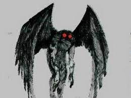

天蛾人

描述
天蛾人（英語：Mothman）又稱飛蛾人，是一種美國都市傳說中的神秘生物，通常被描述為長有翅膀以及紅色眼睛的生物。有理論認為天蛾人是外星生命，並且與黑衣人有關聯。
1966年11月12日至1967年12月15日，據報導說在西維珍尼亞州的波因特普萊森特看到天蛾人。第一份報道出版於1966年11月16日的報紙《Point Pleasant Register》，標題為「Couples See Man-Sized Bird ... Creature ... Something」。全國媒體很快就獲得報導，並且幫助將這個故事傳播至整個美國。1970年，格雷·百克向廣泛觀眾介紹了天蛾人。
目擊
1966年11月12日，5名目擊者在美國西維珍尼亞州的波因特普萊森特（英語：Point Pleasant, West Virginia）一處墓地看見一個像男人的身影從樹林掠過。
1967年12月15日，銀橋發生垮塌，造成46人死亡。作家約翰·基爾在1975年出版的書籍《天蛾人的預言》內容指出天蛾人與銀橋倒塌事故有關聯，並形成天蛾人災難預言的都市傳說，但1971年的官方調查已確認銀橋倒塌事故是Eyebar結構應力腐蝕開裂所造成。